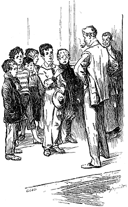
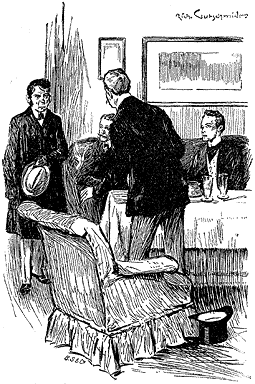

The papers next day were full of the "Brixton Mystery," as they termed it. Each had a long account of the affair, and some had leaders upon it in addition. There was some information in them which was new to me. I still retain in my scrap-book numerous clippings and extracts bearing upon the case. Here is a condensation of a few of them:—
The Daily Telegraph remarked that in the history of crime there had seldom been a tragedy which presented stranger features. The German name of the victim, the absence of all other motive, and the sinister inscription on the wall, all pointed to its perpetration by political refugees and revolutionists. The Socialists had many branches in America, and the deceased had, no doubt, infringed their unwritten laws and been tracked down by them. After alluding airily to the Vehmgericht, aqua tofana, Carbonari, the Marchioness de Brinvilliers, the Darwinian theory, the principles of Malthus, and the Ratcliff Highway murders, the article concluded by admonishing the Government and advocating a closer watch over foreigners in England.
The Standard commented upon the fact that lawless outrages of the sort usually occurred under a Liberal Administration. They arose from the unsettling of the minds of the masses, and the consequent weakening of all authority. The deceased was an American gentleman who had been residing for some weeks in the Metropolis. He had stayed at the boarding-house of Madame Charpentier, in Torquay Terrace, Camberwell. He was accompanied in his travels by his private secretary, Mr. Joseph Stangerson. The two bade adieu to their landlady upon Tuesday, the 4th inst., and departed to Euston Station with the avowed intention of catching the Liverpool express. They were afterwards seen together upon the platform. Nothing more is known of them until Mr. Drebber's body was, as recorded, discovered in an empty house in the Brixton Road, many miles from Euston. How he came there, or how he met his fate, are questions which are still involved in mystery. Nothing is known of the whereabouts of Stangerson. We are glad to learn that Mr. Lestrade and Mr. Gregson, of Scotland Yard, are both engaged upon the case, and it is confidently anticipated that these well-known officers will speedily throw light upon the matter.
The Daily News observed that there was no doubt as to the crime being a political one. The despotism and hatred of Liberalism which animated the Continental Governments had had the effect of driving to our shores a number of men who might have made excellent citizens were they not soured by the recollection of all that they had undergone. Among these men there was a stringent code of honour, any infringement of which was punished by death. Every effort should be made to find the secretary, Stangerson, and to ascertain some particulars of the habits of the deceased. A great step had been gained by the discovery of the address of the house at which he had boarded—a result which was entirely due to the acuteness and energy of Mr. Gregson of Scotland Yard.
Sherlock Holmes and I read these notices over together at breakfast, and they appeared to afford him considerable amusement.
"I told you that, whatever happened, Lestrade and Gregson would be sure to score."
"That depends on how it turns out."
"Oh, bless you, it doesn't matter in the least. If the man is caught, it will be on account of their exertions; if he escapes, it will be in spite of their exertions. It's heads I win and tails you lose. Whatever they do, they will have followers. 'Un sot trouve toujours un plus sot qui l'admire.'"
"What on earth is this?" I cried, for at this moment there came the pattering of many steps in the hall and on the stairs, accompanied by audible expressions of disgust upon the part of our landlady.
"It's the Baker Street division of the detective police force," said my companion gravely; and as he spoke there rushed into the room half a dozen of the dirtiest and most ragged street Arabs that ever I clapped eyes on.
"'Tention!" cried Holmes, in a sharp tone, and the six dirty little scoundrels stood in a line like so many disreputable statuettes. "In future you shall send up Wiggins alone to report, and the rest of you must wait in the street. Have you found it, Wiggins?"
"No, sir, we hain't," said one of the youths.
"I hardly expected you would. You must keep on until you do. Here are your wages." He handed each of them a shilling. "Now, off you go, and come back with a better report next time."
He waved his hand, and they scampered away downstairs like so many rats, and we heard their shrill voices next moment in the street.
"There's more work to be got out of one of those little beggars than out of a dozen of the force," Holmes remarked. "The mere sight of an official-looking person seals men's lips. These youngsters, however, go everywhere and hear everything. They are as sharp as needles, too; all they want is organization."
"Is it on this Brixton case that you are employing them?" I asked.
"Yes; there is a point which I wish to ascertain. It is merely a matter of time. Hullo! we are going to hear some news now with a vengeance ! Here is Gregson coming down the road with beatitude written upon every feature of his face. Bound for us, I know. Yes, he is stopping. There he is!"
There was a violent peal at the bell, and in a few seconds the fair-headed detective came up the stairs, three steps at a time, and burst into our sitting-room.
"My dear fellow," he cried wringing Holmes' unresponsive hand, "congratulate me! I have made the whole thing as clear as day."
A shade of anxiety seemed to me to cross my companion's expressive face.
"Do you mean that you are on the right track?" he asked.
"The right track! Why, sir, we have the man under lock and key."
"And his name is?"
"Arthur Charpentier, sub-lieutenant in Her Majesty's navy." cried Gregson pompously rubbing his fat hands and inflating his chest.
Sherlock Holmes gave a sigh of relief and relaxed into a smile.
"Take a seat, and try one of these cigars," he said. "We are anxious to know how you managed it. Will you have some whiskey and water?"
"I don't mind if I do," the detective answered. "The tremendous exertions which I have gone through during the last day or two have worn me out. Not so much bodily exertion, you understand, as the strain upon the mind. You will appreciate that, Mr. Sherlock Holmes, for we are both brain-workers."
"You do me too much honour," said Holmes, gravely. "Let us hear how you arrived at this most gratifying result."
The detective seated himself in the arm-chair, and puffed complacently at his cigar. Then suddenly he slapped his thigh in a paroxysm of amusement.
"The fun of it is," he cried, "that that fool Lestrade, who thinks himself so smart, has gone off upon the wrong track altogether. He is after the secretary Stangerson, who had no more to do with the crime than the babe unborn. I have no doubt that he has caught him by this time."
The idea tickled Gregson so much that he laughed until he choked.
"And how did you get your clue?"
"Ah, I'll tell you all about it. Of course, Doctor Watson, this is strictly between ourselves. The first difficulty which we had to contend with was the finding of this American's antecedents. Some people would have waited until their advertisements were answered, or until parties came forward and volunteered information. That is not Tobias Gregson's way of going to work. You remember the hat beside the dead man?"
"Yes," said Holmes; "by John Underwood and Sons, 129, Camberwell Road."
Gregson looked quite crest-fallen.
"I had no idea that you noticed that," he said. "Have you been there?"
"No."
"Ha!" cried Gregson, in a relieved voice; "you should never neglect a chance, however small it may seem."
"To a great mind, nothing is little," remarked Holmes, sententiously.
"Well, I went to Underwood, and asked him if he had sold a hat of that size and description. He looked over his books, and came on it at once. He had sent the hat to a Mr. Drebber, residing at Charpentier's Boarding Establishment, Torquay Terrace. Thus I got at his address."
"Smart—very smart!" murmured Sherlock Holmes.
"I next called upon Madame Charpentier," continued the detective: "I found her very pale and distressed. Her daughter was in the room too—an uncommonly fine girl she is too; she was looking red about the eyes and her lips trembled as I spoke to her. That didn't escape my notice. I began to smell a rat. You know the feeling, Mr. Sherlock Holmes, when you come upon the right scent—a kind of thrill in your nerves. 'Have you heard of the mysterious death of your late boarder Mr. Enoch J. Drebber, of Cleveland?' I asked.
"The mother nodded. She didn't seem able to get out a word. The daughter burst into tears. I felt more than ever that these people knew something of the matter.
"'At what o'clock did Mr. Drebber leave your house for the train?' I asked.
"'At eight o'clock,' she said, gulping in her throat to keep down her agitation. 'His secretary, Mr. Stangerson, said that there were two trains—one at 9.15 and one at 11. He was to catch the first.'
" 'And was that the last which you saw of him?'
"A terrible change came over the woman's face as I asked the question. Her features turned perfectly livid. It was some seconds before she could get out the single word 'Yes'—and when it did come it was in a husky, unnatural tone.
"There was silence for a moment, and then the daughter spoke in a calm, clear voice.
"'No good can ever come of falsehood, mother,' she said. 'Let us be frank with this gentleman. We did see Mr. Drebber again.'
"'God forgive you!' cried Madame Charpentier, throwing up her hands and sinking back in her chair. 'You have murdered your brother.'
"'Arthur would rather that we spoke the truth,' the girl answered firmly.
"'You had best tell me all about it now,' I said. 'Half confidences are worse than none. Besides, you do not know how much we know of it.'
"'On your head be it, Alice!' cried her mother; and then, turning to me, 'I will tell you all, sir. Do not imagine that my agitation on behalf of my son arises from any fear lest he should have had a hand in this terrible affair. He is utterly innocent of it. My dread is, however, that in your eyes and in the eyes of others he may appear to be compromised. That, however, is surely impossible. His high character, his profession, his antecedents would all forbid it.'
"'Your best way is to make a clean breast of the facts,' I answered. 'Depend upon it, if your son is innocent he will be none the worse.'
"'Perhaps, Alice, you had better leave us together,' she said, and her daughter withdrew. 'Now, sir,' she continued, 'I had no intention of telling you all this, but since my poor daughter has disclosed it I have no alternative. Having once decided to speak, I will tell you all without omitting any particular.'
"'It is your wisest course,' said I.
"'Mr. Drebber has been with us nearly three weeks. He and his secretary, Mr. Stangerson, had been travelling on the Continent. I noticed a "Copenhagen" label upon each of their trunks, showing that that had been their last stopping place. Stangerson was a quiet, reserved man, but his employer, I am sorry to say, was far otherwise. He was coarse in his habits and brutish in his ways. The very night of his arrival he became very much the worse for drink, and, indeed, after twelve o'clock in the day he could hardly ever be said to be sober. His manners towards the maid-servants were disgustingly free and familiar. Worst of all, he speedily assumed the same attitude towards my daughter, Alice, and spoke to her more than once in a way which, fortunately, she is too innocent to understand. On one occasion he actually seized her in his arms and embraced her—an outrage which caused his own secretary to reproach him for his unmanly conduct.'
"'But why did you stand all this?' I asked. 'I suppose that you can get rid of your boarders when you wish.'
"Mrs. Charpentier blushed at my pertinent question. 'Would to God that I had given him notice on the very day that he came,' she said. 'But it was a sore temptation. They were paying a pound a day each—fourteen pounds a week, and this is the slack season. I am a widow, and my boy in the Navy has cost me much. I grudged to lose the money. I acted for the best. This last was too much, however, and I gave him notice to leave on account of it. That was the reason of his going.'
"'Well?'
"'My heart grew light when I saw him drive away. My son is on leave just now, but I did not tell him anything of all this, for his temper is violent, and he is passionately fond of his sister. When I closed the door behind them a load seemed to be lifted from my mind. Alas, in less than an hour there was a ring at the bell, and I learned that Mr. Drebber had returned. He was much excited, and evidently the worse for drink. He forced his way into the room, where I was sitting with my daughter, and made some incoherent remark about having missed his train. He then turned to Alice, and before my very face, proposed to her that she should fly with him. "You are of age," he said, "and there is no law to stop you. I have money enough and to spare. Never mind the old girl there, but come along with me now straight away. You shall live like a princess." Poor Alice was so frightened that she shrunk away from him, but he caught her by the wrist and endeavoured to draw her towards the door. I screamed, and at that moment my son Arthur came into the room. What happened then I do not know. I heard oaths and the confused sounds of a scuffle. I was too terrified to raise my head. When I did look up, I saw Arthur standing in the doorway laughing, with a stick in his hand. "I don't think that fine fellow will trouble us again," he said. "I will just go after him and see what he does with himself." With those words he took his hat and started off down the street. The next morning we heard of Mr. Drebber's mysterious death.'
"This statement came from Mrs. Charpentier's lips with many gasps and pauses. At times she spoke so low that I could hardly catch the words. I made short-hand notes of all that she said, however, so that there should be no possibility of a mistake."
"It's quite exciting," said Sherlock Holmes, with a yawn. "What happened next?"
"When Mrs. Charpentier paused," the detective continued, "I saw that the whole case hung upon one point. Fixing her with my eye in a way which I always found effective with women, I asked her at what hour her son returned.
"'I do not know,' she answered.
"'Not know?"
"'No; he has a latch-key, and he lets himself in.'
"'After you went to bed?'
"'Yes.'
"'When did you go to bed?'
"'About eleven.'
"'So your son was gone at least two hours?'
"'Yes.'
"'Possibly four or five?'
"'Yes.'
"'What was he doing during that time?'
"'I do not know?' she answered, turning white to her very lips.
"Of course after that there was nothing more to be done. I found out where Lieutenant Charpentier was, took two officers with me, and arrested him. When I touched him on the shoulder and warned him to come quietly with us, he answered us as bold as brass, 'I suppose you are arresting me for being concerned in the death of that scoundrel Drebber,' he said. We had said nothing to him about it, so that his alluding to it had a most suspicious aspect."
"Very," said Holmes.
"He still carried the heavy stick which the mother described him as having with him when he followed Drebber. It was a stout oak cudgel."
"What is your theory, then?"
"Well, my theory is that he followed Drebber as far as the Brixton Road. When there, a fresh altercation arose between them, in the course of which Drebber received a blow from the stick, in the pit of the stomach perhaps, which killed him without leaving any mark. The night was so wet that no one was about, so Charpentier dragged the body of his victim into the empty house. As to the candle, and the blood, and the writing on the wall, and the ring, they may all be so many tricks to throw the police on to the wrong scent."
"Well done!" said Holmes in an encouraging voice. "Really, Gregson, you are getting along. We shall make something of you yet."
"I flatter myself that I have managed it rather neatly," the detective answered proudly. "The young man volunteered a statement, in which he said that after following Drebber some time, the latter perceived him, and took a cab in order to get away from him. On his way home he met an old shipmate, and took a long walk with him. On being asked where this old shipmate lived, he was unable to give any satisfactory reply. I think the whole case fits together uncommonly well. What amuses me is to think of Lestrade, who had started off upon the wrong scent. I am afraid he won't make much of it. Why, by Jove, here's the very man himself!"
It was indeed Lestrade, who had ascended the stairs while we were talking, and who now entered the room. The assurance and jauntiness which generally marked his demeanour and dress were however, wanting. His face was disturbed and troubled, while his clothes were disarranged and untidy. He had evidently come with the intention of consulting with Sherlock Holmes, for on perceiving his colleague he appeared to be embarrassed and put out. He stood in the centre of the room fumbling nervously with his hat and uncertain what to do. "This is a most extraordinary case," he said at last—"a most incomprehensible affair."
"Ah, you find it so, Mr. Lestrade!" cried Gregson, triumphantly. "I thought you would come to that conclusion. Have you managed to find the secretary, Mr. Joseph Stangerson?"
"The secretary, Mr. Joseph Stangerson," said Lestrade gravely, "was murdered at Halliday's Private Hotel about six o'clock this morning."